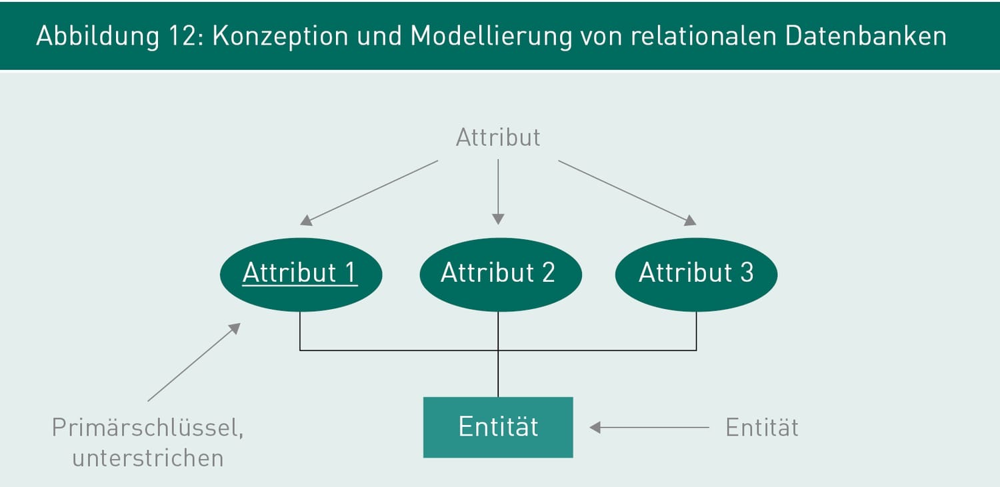
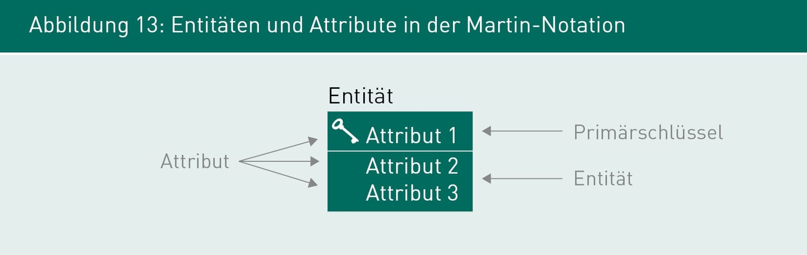

UML-Klassendiagramm
UML-Klassendiagramme werden genutzt, um Entitäten als Klassen mit Attributen darzustellen. Primärschlüssel werden als Eigenschaften des Attributes in geschweiften Klammern notiert.
Abbildung 15: Entitäten und Attribute in UML
Die Erstellung der Struktur einer relationalen Datenbank ist ein iterativer Prozess. Auf Basis eines fachlichen Datenmodells wird ein technisches Datenmodell erstellt, welches die Struktur in einem Datenbankmanagementsystem (DBMS) definiert. Ähnlich wie bei der Objektorientierung geht es beim Entwurf nicht um die Implementierung eines Systems, sondern um die Implementierung einer Datenbankstruktur.
Zur Modellierung und Dokumentation dieser Struktur wird das Entity-Relationship-Diagramm (ER-Diagramm) genutzt. Dieses ist speziell zur Modellierung von Datenschemata ausgelegt und unterscheidet sich von universelleren Modellierungssprachen wie der UML (Unified Modeling Language).
Ein ER-Modell besteht aus den folgenden Modellelementen: Entitäten, Attribute, Schlüssel und Beziehungen. In der Praxis werden oft künstliche Schlüssel als Primärschlüssel verwendet, die rein technische Informationen beinhalten und von der Datenbank automatisch generiert werden.
Entitäten stehen in Beziehung zueinander. Eine Beziehung ist mindestens zweistellig (zwischen zwei Entitäten), kann jedoch auch mehrstellig sein. Eine Beziehung kann außerdem eigene Attribute besitzen.
Die wichtigsten Notationselemente in grafischen ER-Diagrammen werden durch verschiedene Notationsformen dargestellt. Die drei gebräuchlichsten Formen sind die Chen-Notation, die Martin-Notation (auch Krähenfußnotation genannt) und UML-Klassendiagramme.
Die Chen-Notation ist eine der ältesten grafischen Notationen für relationale Datenmodelle. Entitäten werden durch Rechtecke und Attribute durch Ovale dargestellt. Primärschlüssel werden durch Unterstreichen des Attributnamens hervorgehoben.
Abbildung 13: Konzeption und Modellierung von relationalen Datenbanken
In der Martin-Notation wird der Name der Entität über einem Rechteck notiert. Der Primärschlüssel befindet sich im oberen Bereich des Rechtecks, während alle anderen Attribute darunter aufgelistet werden.
Abbildung 14: Entitäten und Attribute in der Martin-Notation
UML-Klassendiagramme werden genutzt, um Entitäten als Klassen mit Attributen darzustellen. Primärschlüssel werden als Eigenschaften des Attributes in geschweiften Klammern notiert.
Abbildung 15: Entitäten und Attribute in UML